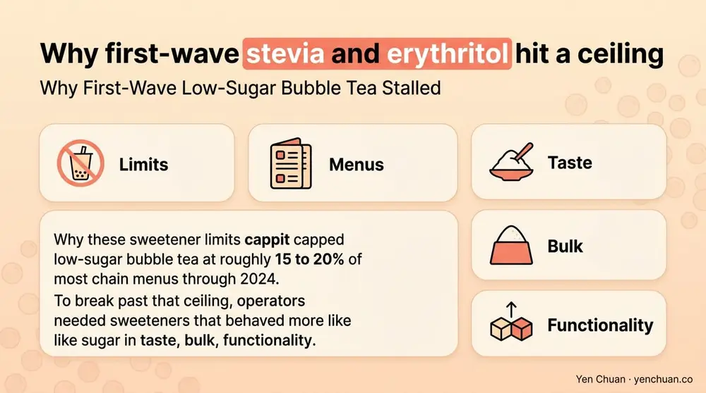
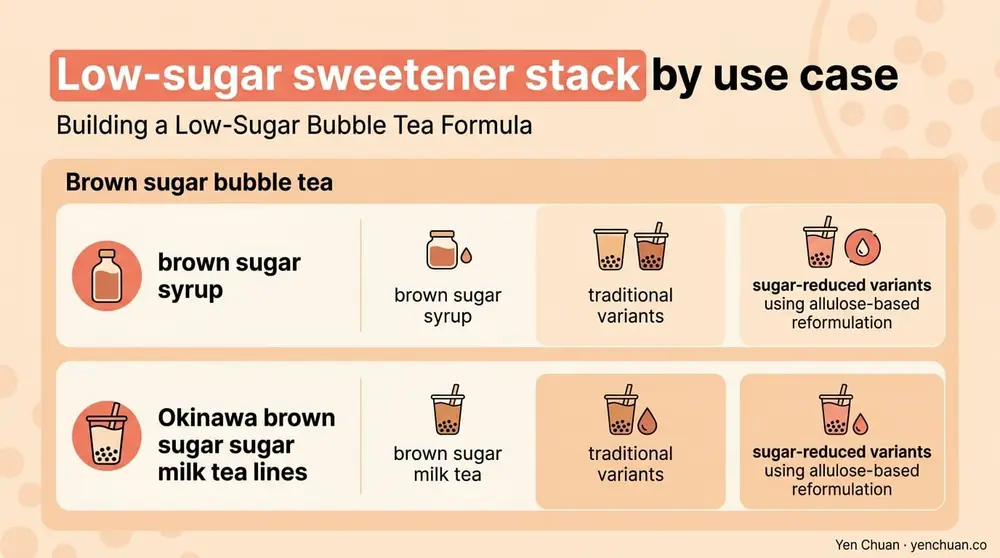

文章 / 經營與採購
Low-Sugar Bubble Tea Sweetener Technology Guide
這篇是英文原文，尚未完成繁體中文翻譯。中文選單與相關商品連結不會切回英文介面。

查看英文原文（尚未翻譯）
Stevia and erythritol built the first wave of low-sugar bubble tea. They solved the calorie problem but left operators managing a persistent bitter aftertaste, cooling mouthfeel, and recipe reformulation headaches. In 2026 a second wave is arriving: rare sugars, new protein sweeteners, and better stevia isolates that sidestep the old trade-offs.
This technical guide maps the next-generation sweetener stack for low-sugar bubble tea — allulose, brazzein, Reb M stevia, D-psicose blends, and thaumatin — and shows where each fits in a boba menu. Written for operators reformulating their own drinks, chains working with co-packers, and private label teams scoping sugar-free SKUs.
Why First-Wave Low-Sugar Bubble Tea Stalled
The original low-sugar playbook used stevia (Reb A), erythritol, or a blend. These ingredients cut calories but created four recurring problems:
- Bitter finish from Reb A stevia, particularly at the high usage levels bubble tea needs to compete with brown sugar syrup
- Cooling sensation from erythritol, which clashes with hot milk tea formats
- Digestive complaints at high erythritol doses, worsened after a 2023 Cleveland Clinic study linked erythritol to cardiovascular events, which reshaped consumer perception
- Texture loss in syrups and jellies, since sugar is a structural ingredient, not just a flavor
These limits capped low-sugar bubble tea at roughly 15 to 20% of most chain menus through 2024. To break past that ceiling, operators needed sweeteners that behaved more like sugar in taste, bulk, and functionality.

The Second-Wave Sweetener Stack
The ingredients now gaining share in commercial bubble tea formulation are structurally different from Reb A and erythritol. They fall into three categories.
Rare sugars. Allulose (D-psicose) is the standout. It is a naturally occurring monosaccharide that tastes 70% as sweet as sucrose, carries 0.4 kcal/g instead of 4, and browns like sugar in caramel syrups. The U.S. FDA issued a No Questions letter confirming allulose's GRAS status in 2019 and now permits excluding it from "total sugars" and "added sugars" on U.S. Nutrition Facts panels. That regulatory treatment makes allulose the most practical sugar replacer for Nutrition-Facts-driven markets.
Tagatose is a parallel option with similar metabolic profile but lower sweetness (around 90% of sucrose) and a more pronounced cooling effect. Both allulose and tagatose can be blended with high-intensity sweeteners to close the sweetness gap.
High-intensity protein and isolate sweeteners. Brazzein is a sweet-tasting protein originally from the West African Pentadiplandra berry, now produced commercially by precision fermentation. It is 500 to 2,000 times sweeter than sucrose with a clean sugar-like profile and minimal aftertaste. Companies including Conagen and Oobli have brought fermentation-derived brazzein to the U.S. market under GRAS filings.
Thaumatin and monellin are related sweet proteins already used in Japan and the EU. Thaumatin doubles as a flavor enhancer, reducing bitterness from tea polyphenols — useful in low-sugar green tea and matcha bubble tea.
Better stevia isolates. Reb M and Reb D are steviol glycosides that taste closer to sucrose than Reb A. They are now produced commercially via bioconversion from Reb A, which brought prices down significantly between 2020 and 2025. Reb M in particular avoids the bitter, licorice-like aftertaste of first-generation stevia. Cargill's EverSweet and PureCircle's Sigma-branded Reb M/D isolates are the most commonly specified in B2B procurement.
Allulose: The Closest Thing to Sugar Itself
For bubble tea applications, allulose has become the anchor sweetener in most next-generation low-sugar formulations. It earns its place because it mimics sugar's functional behavior, not just its taste.
In a brown sugar syrup reformulation, allulose caramelizes at similar temperatures to sucrose, producing the same deep amber color and caramel-lactone aroma. In fruit syrups, it provides bulk and viscosity without crystallizing. In tapioca pearl soaks, it penetrates the pearl and holds chewy texture without adding measurable calories on the label.
The drawbacks are real. Allulose costs two to four times more than sucrose on a per-gram basis, though the usage ratio of roughly 1.3:1 (allulose to sucrose) moderates the finished-cost impact. Digestive tolerance varies; the European Food Safety Authority has not yet granted full novel food approval as of Q2 2026, so EU exports are restricted. And allulose is hygroscopic — syrup shelf life drops 10 to 20% versus a sucrose control.
For U.S., Japanese, Singaporean, and Australian markets, allulose is the most practical sugar replacer for bubble tea. For EU destinations, formulators typically fall back to a Reb M plus erythritol base, sometimes with tagatose.
Building a Low-Sugar Bubble Tea Formula
A typical 16 oz (473 ml) classic milk tea uses 25 to 35 g of sucrose in the conventional format. Three reformulation routes are now standard:
| Route | Base Sweetener | Booster | Use Case |
|---|---|---|---|
| Allulose-forward | 25 g allulose | 50-80 ppm Reb M | U.S./APAC, natural claim, no sugar alcohol label |
| Reb M + erythritol | 10 g erythritol | 80-120 ppm Reb M | EU, keto, lowest calorie |
| Rare sugar blend | 15 g allulose + 10 g tagatose | 50 ppm Reb M | Premium chains, brown sugar formats |
Ratios should be tuned in sensory testing against the chain's flagship drink. The formulation rule of thumb is to start with total sweetness equivalent to 85% of the original sucrose level and then adjust up or down based on taste panels. Bubble tea customers generally tolerate slightly less sweetness when the bitter aftertaste is also removed.
For sugar-forward formats like brown sugar bubble tea, our brown sugar syrup and Okinawa brown sugar milk tea lines are available in both traditional and sugar-reduced variants using allulose-based reformulation.

Labeling and Regulatory Considerations
Sweetener choice is not only a formulation decision — it is a labeling decision. The rules vary sharply by market.
United States. Allulose can be excluded from "total sugars" and "added sugars" per FDA guidance. Steviol glycosides and monk fruit can be labeled as "natural flavors" or named directly. Brazzein and thaumatin require "sweet protein" descriptors. Erythritol must appear in the ingredient list; it cannot be hidden inside a "natural flavor."
European Union. Allulose is pending novel food approval. Steviol glycosides, thaumatin, and neotame are all approved. Erythritol maximum use levels are set for each food category; bubble tea would typically fall under "beverages flavored, non-alcoholic."
Japan. Rare sugars including allulose, tagatose, and D-psicose are approved and widely used. Stevia is approved. Thaumatin has long-standing approval.
Southeast Asia. Regulatory acceptance tracks either U.S. FDA (Singapore, Philippines, Vietnam) or EU (Malaysia for some categories). Indonesia requires separate BPOM registration for each sweetener.
For U.S. exporters in particular, the FDA nutrition panel rules intersect with the clean label conversation covered in our clean label beverage ingredients guide and the FDA nutrition labeling rules for beverages sold at retail.
Cost, Shelf Life, and Supply Chain Reality
A 2026 procurement-ready cost matrix for bubble tea sweetener ingredients:
- Allulose (bulk, food-grade): $6–9/kg FOB Asia, $10–14/kg delivered U.S.
- Reb M stevia (bioconverted): $150–250/kg, used at 50–150 ppm
- Erythritol (bulk): $3–5/kg
- Tagatose: $12–18/kg
- Brazzein (precision fermentation): $2,000–4,000/kg, used at <50 ppm
- Thaumatin: $1,500–2,500/kg
Shelf life considerations:
- Allulose is hygroscopic; syrups need tight moisture control and typically 18 month shelf life versus 24 for sucrose
- Reb M/D isolates are stable but can precipitate in low-pH syrups below pH 3.5
- Brazzein is heat-sensitive above 80 °C; specify cold-brew or low-pasteurization applications
- Erythritol crystallizes in concentrated syrups; blend with glycerin or allulose to suppress
Supply chain maturity varies. Allulose, erythritol, and Reb M are commodity-traded with multiple qualified suppliers in China, Korea, and the U.S. Brazzein and thaumatin remain speciality ingredients with limited production capacity and longer lead times (8 to 14 weeks typical).
For operators sourcing through intermediaries, our milk tea supplier guide covers the pricing and negotiation workflow for specialty ingredients.
The 2026 Outlook
Three shifts are worth watching. First, allulose's price is expected to drop another 15 to 25% as more Chinese and Korean capacity comes online; that will close the gap with sucrose for premium chains. Second, brazzein prices will fall as fermentation scale increases — current $2,000+/kg figures could reach $500 to $800/kg by 2028 based on public capacity announcements. Third, EU novel food approval for allulose, expected in late 2026 or 2027, will unlock a European reformulation wave.
The operators moving fastest are the ones treating sweetener choice as an R&D investment, not a commodity purchase. Taste panels, shelf-life trials, and labeling review need six to nine months. Chains still running a single Reb A stevia line in 2026 are carrying avoidable competitive disadvantage.
Sources
- U.S. FDA Sugars (Total and Added) Labeling Guidance for Allulose
- Cleveland Clinic: Erythritol and Cardiovascular Risk (Nature Medicine, 2023)
- EFSA Scientific Opinion on Steviol Glycosides
- Grand View Research: Allulose Market Report 2024
- Mintel Global New Products Database: Sweetener Launches 2024–2025
About Yen Chuan
Yen Chuan has been at the heart of Taiwan's bubble tea industry for over 20 years, supplying premium powders, syrups, tapioca pearls, and tea leaves to thousands of boba shops worldwide. With an in-house R&D lab and a commitment to quality ingredients, Yen Chuan is more than a supplier — we're your partner in the boba business. Our R&D team has run reformulation trials on allulose, Reb M, and blended sweetener systems since 2022 and ships sugar-reduced powder, syrup, and pearl SKUs to regional chains across Asia, North America, and Europe.
Rebuilding a low-sugar menu and unsure which sweetener stack fits your market, label, and price point? Browse our sugar-reduced ingredient catalog or talk to our R&D team — we will share formulation benchmarks and co-develop prototypes for your chain.
Frequently Asked Questions
Q: What is the best sweetener for low-sugar bubble tea? A: Allulose is currently the closest-to-sucrose option for U.S. and APAC markets, usually blended with a small dose of Reb M stevia. EU formulations fall back to Reb M plus erythritol while waiting for allulose novel food approval.
Q: Is allulose safe and approved for beverages? A: Allulose has GRAS status with the U.S. FDA and is approved in Japan, Singapore, and Australia for food and beverage use. The EU has not yet finalized novel food approval as of Q2 2026.
Q: Why does erythritol have a cooling mouthfeel? A: Erythritol dissolves endothermically, absorbing heat as it enters liquid, which produces a cooling sensation. This can clash with hot drinks and is one reason formulators now blend erythritol with allulose or skip it entirely in low-sugar bubble tea.
Q: What is Reb M stevia? A: Reb M is a steviol glycoside that tastes significantly closer to sucrose than the first-generation Reb A. It is produced through bioconversion of Reb A or precision fermentation and avoids the bitter licorice aftertaste that limited earlier stevia applications.
Q: How much more does a low-sugar bubble tea cost to produce? A: The finished-cup ingredient cost for a low-sugar reformulation using allulose and Reb M typically runs 15 to 30% above a sucrose baseline. Brazzein-based systems are currently higher but are expected to fall as fermentation capacity grows.